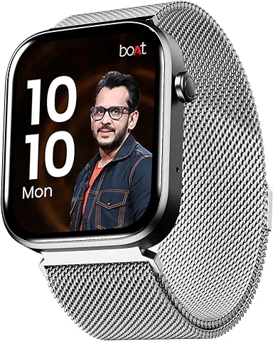

₹999/-
Brand: boAt
Operating System: Smartwatch
Special Feature: Advanced BT Calling
Display : 1.83" HD Display
Connectivity Technology: Bluetooth
About this item:
Screen: 1.83-inch HD display with a square dial offers a full capacitive touch experience, allowing you to easily take control. Peak Brightness: 550 Nits, AMOLED Display
DIY Watch Face Studio- Customize watch faces as per your own needs. Choose, backgrounds, themes & widgets ;Live Cricket Score- Get notified of all the happenings on the pitch with live cricket scores.
700+ Active Modes- From running to binge-watching, from weight training to dog walking, and from skateboarding to snuggling
Bluetooth- Advanced Bluetooth calling offers a quicker, stronger, and better connection so you can dial seamlessly
Watch Face Studio: With so many options, you'll be inundated.